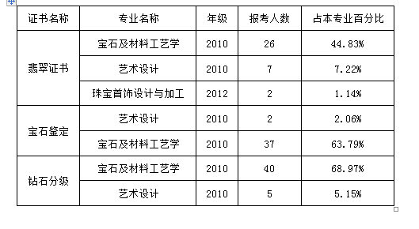

学风建设是高等学校永恒的主题。优良学风是全面贯彻党的教育方针、实现培养目标的重要条件。学风的好坏是衡量高校办学水平的重要标志。2013年是我校的学风建设年，我院根据《华南理工大学广州学院学风建设方案》（以下简称《华广学建方案》）的文件精神和要求，积极开展学风建设工作。具体体现在以下六个方面：
学风建设是一项系统工程，良好学风需要领导、教师、基层行政人员、实验技术人员以及学生等多层次人员的共同营造。按照《华广学建方案》的要求，我院高度重视学风建设工作，2013年5月成立珠宝学院学风建设领导小组、工作小组；制定《华南理工大学广州学院珠宝学院学风建设方案》（以下简称《珠宝学建方案》）。确立了以教风带学风、以考风正学风、以管理促学风、以活动倡学风、以班级建学风，全员动员，全员参与的指导思想；明确了“六个明显”的学风建设目标，即学生的学习积极性明显提高、违纪现象明显减少、考风考纪明显好转、学习成绩明显进步、班级学习氛围和凝聚力明显改善、综合能力明显提高。根据《珠宝学建方案》，我院分别召开全院教职工大会、全院学生干部大会及班级主题班会，传达了《华广学建方案》的文件精神及布置相关工作、明确职责。
学风建设领导小组与工作小组成立后，我院组织并发挥学生干部的带头作用，通过调查问卷的形式对我院的学风现状开展调研。问卷就学习态度、学习动力、学习氛围、学习自觉性及学习困难五个方面进行调查，共发放150份问卷，回收128份有效问卷。问卷的统计分析在一定程度上反映了我院的学风现状及存在的一些问题。如：
(1) 存在一小部分同学的学习计划不明确，学习目标模糊，学习动力不足；
（2） 存在迟到旷课现象，课堂互动氛围不够活跃；
（3） 小部分同学游戏成瘾，作息时间混乱，学习成绩下滑，人际关系紧张，形成恶性循环。
问卷调查发现的这些问题和不足为我院的学风建设找到抓手。
按照《华广学建方案》的要求，我院辅导员和班主任认真负责，组织学生干部深入课堂，检查学生到课率和课堂纪律，对缺课和违反课堂纪律的同学进行耐心教育，对屡教不改的同学做出相应处罚和公示。在深入课室的同时，我院辅导员和班主任走进学生宿舍，了解学生的宿舍生活，对沉迷网络和游戏的学生开展教育工作。2013年，我院辅导员查课84次，进宿舍次数为37人次，学生谈话16人次；班主任谈话61人次。
为形成全方位、多层次、多角度的学生自我管理和自我教育的风气，需不断加强学生组织榜样的建设，充分发挥学生组织的引领作用。
为此，我院号召学生党员和入党积极分子积极发挥模范带头作用，树立学风典范，并将学风建设中的个人表现列为预备党员和入党积极分子的重要考察因素。在发挥党员作用的同时，我院充分利用各级学生组织干部的督管作用，各司其责配合学院做好学风建设工作，如班长的任务包括制定其所在班级的学风建设工作计划，组织学期中期检查，组织班级活动及记录主题班会活动；学习委员的任务包括每天填写上课考勤表并每周汇总上交学院，关心学习困难学生，进行“1+1”捆绑式帮扶；生活委员负责宣传宿舍安全防范知识，督促本班同学做好宿舍文化生活等等。
为抓好课堂阵地，切实加强对课堂纪律、学习风气的管理和引导，我院充分发挥任课老师和班级骨干的作用，狠抓上课考勤及课堂纪律，形成一套课堂考核制度。学习委员每天填写课堂考核表并按周将考核表上交学生会学术部；学术部整理汇总各个行政班的考勤记录和违纪情况后将汇总表格上交学院；学院对表现优异的班级进行公开表扬，对表现差的班级进行通报批评，并将此作为学年度优秀班集体评比的考量指标之一。
为抓好宿舍阵地建设，我院班主任组织本班学生开展学习《华南理工大学广州学院学生住宿管理条例》主题班会，向学生灌输安全、文明、和谐的住宿理念。抓住学校宿舍文化节的契机，我院依靠团委学生会，发动学生参与各项宿舍文化建设活动，制作以心理健康与宿舍安全为主题的小报，向学生宣传健康安全知识，致力建立文明、舒适、有序的学习生活环境。我院学生响应号召，积极参与宿舍评比、对联大赛、“宿舍杯”摄影大赛等。在宿舍评比中我院C8-524、C10-520等7个学生宿舍获奖。
为抓好考场阵地，形成严正的考风、督促学生诚实应考，我院采取考前教育，考中监察，考后处分等多管齐下的办法，即考前，由各班班主任召开主题班会，进行考风考纪教育；考试期间，将教师监考与学院领导巡考相结合，杜绝违纪现象出现；考后对出现违纪的学生进行处分；最终使学生不想作弊，不能作弊，不敢作弊。
素质拓展活动在帮助学生提供综合素质的同时可以促进学风建设。我院鼓励学生积极参加素质教育活动以及校内外各种学术科技竞赛，通过活动和竞赛引导学生养成学习、思考、动手的习惯，形成爱学习的风气。
为调动学生参与学风建设的积极性和主动能动性，我院组织开展了各类具有珠宝学院专业特色的活动，如结合党建主题开展“我的彩色中国梦”班级电子相册制作活动，引导学生记录平时学习活动中的点滴，这样既可以作为学生学习状态的记录本，也能形成对四年大学学习生活的珍贵回忆。除此之外，学院还组织开展了班级风采展活动和“TA”说珠宝学院摄影大赛、青年月“环保首饰设计大赛”的活动。这些活动的开展，不仅为学生营造了与课堂不同、相对轻松的学习氛围，还能在竞赛的主题引导下，帮助学生了解自己的优势和不足，激发学生的自我提升意识。学习之余，珠宝学院也举办了班际篮球赛、学院趣味拔河比赛等体育竞技项目，引导学生锻炼身体，为学习打好基础，同时也对班风建设发挥了事半功倍的促进作用。
在专业老师的指导和带领下，我院宝石材料及工艺学、服装与服饰设计、产品设计三个专业的学生均参加了专业相关的学术科技竞赛，并取得不错的成绩。其中，宝石材料及工艺学专业的黄子倩、谢明慧等5名同学在第十一届技能节“飞博尔杯珠宝鉴定技能竞赛”中斩获两项二等奖、一项三等奖及两项优秀奖；服装与服饰设计专业的林仲权在2013“真皮标志杯”中国箱包设计大赛中赢得铜奖；产品设计专业黄欣妍、麦楚筠、沈世彬等19名同学在第四届中国“云峰杯”珠宝首饰设计创意大赛中斩获最佳创意奖、最佳工艺奖、最具时尚奖、3项大赛新秀奖及19大赛优胜奖。
专业实践方面，我院截至2013年8月已与云峰珠宝企业、花都珠宝工业园、广州杰宏泰首饰有限公司、广东省珠宝玉石及贵金属检测中心、广州众星珠宝有限公司、广州市奢华珠宝有限公司六家企事业单位合作建立实习基地，总共可接纳140名学生参与实习。另外，我院目前具备服装设计工艺室、宝石琢型实验室、三维设计室等17个实验室，为学生加强专业能力、动手能力提供坚实的基础。
此外，我院鼓励学生积极参加专业资格证书考试，2013年各类专业证书参考统计数据如下：

回眸2013年的学风建设工作，我院取得一些进展和经验，主要有：
1.依靠学生班干，建立考勤课堂纪律自检制度，对上课到课率的改善有一定的促进作用。
2.在策划筹备素质拓展活动和学术科技竞赛时，将其与专业知识的教学紧密结合。这样既为学生营造了与课堂不同、相对轻松的学习氛围，激发学生学习专业知识的兴趣，又将专业知识应用到活动实践中去，加深对专业知识的理解，锻炼动手能力，对学风建设工作起到事半功倍的效果。
由于教师兼任班主任、教学任务较重，学院缺乏行政人员、辅导员要兼顾行政事务等其它工作，因此造成教师和辅导员的时间碎片化，致使班主任队伍和辅导员队伍在课堂阵地和宿舍阵地的建设方面还存在一些不足。
今后我院将继续努力，利用我校“学风建设年” 这一契机，大力开展学风建设系列活动，以生为本加强对学生的教育与帮助，采取措施进一步建设优良的学习环境，以促进我院良好学风的形成。
附件： 2013年珠宝学院学风建设总结
珠宝学院